LL Buchanan Lake
Other Birds
Ospreys, Canadian Geese, Mallards, Wood Ducks, Cormorants, Herons, and such.......
The April 2007 bird report: Canadian geese nested in the osprey nest. When the ospreys returned, the geese defended by standing on the nest, with head held high, and wings spread out half way. It worked. The ospreys therefore built a new nest on a power pole 80 feet away. That caused major gossip in the local bird community. Four goslings were seen successfully flutter-descending from the nest, into the weeds, and got to the safety of the lake. After the geese left the nest, the ospreys used it for an eating perch. But the ospreys want a meeting of the Audubon Society Northwest Species Nesting Relations Committee, and compensation.
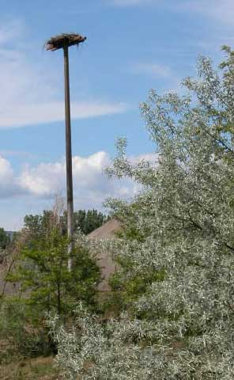
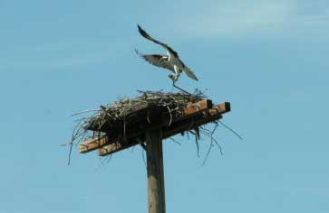
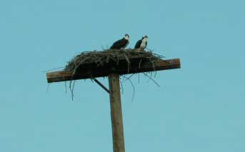
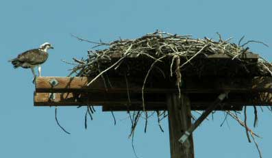
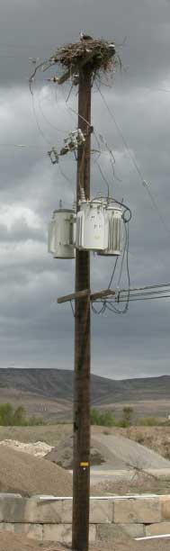
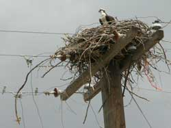
The 2007 nest on the power pole 80 feet from the other osprey (goose) nest. Three sparrows are in the photo. A sparrow nest is in the bottom of the osprey nest.
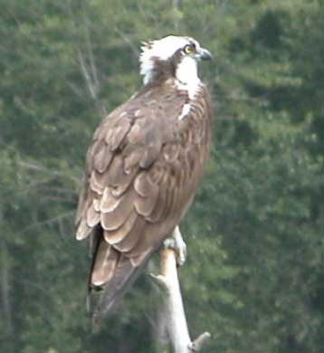
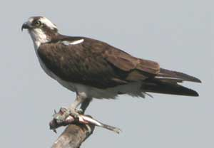
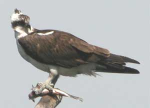
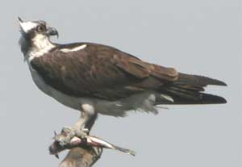
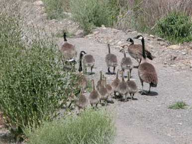
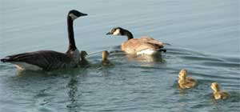
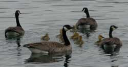
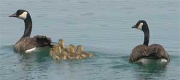
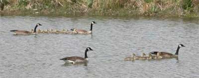
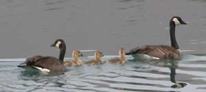
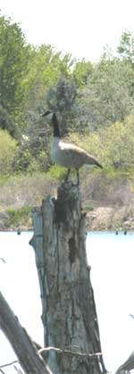
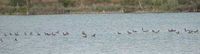
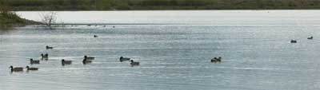
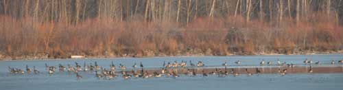
Geese and ducks at the open water spot on the frozen lake in January 2007. Over 500 Canadian geese were on the lake one day.
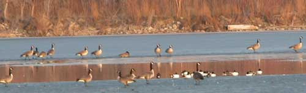
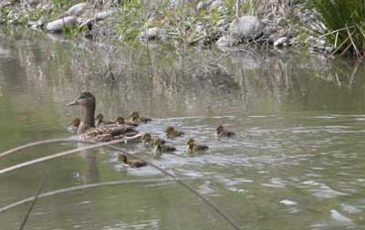
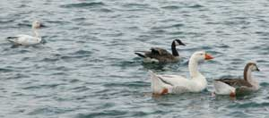
Above photo: Domestic geese, Canadian goose, Ross or Snow goose?
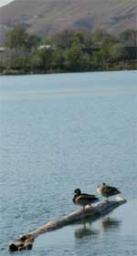
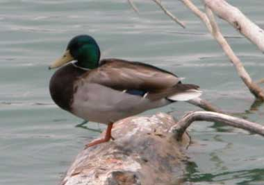
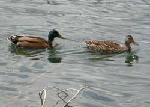
Above photo: Mallard / Shoveller cross?
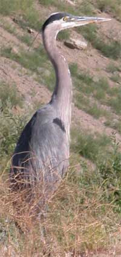
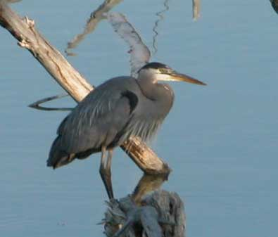
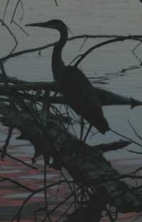
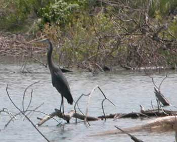
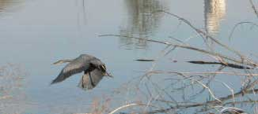
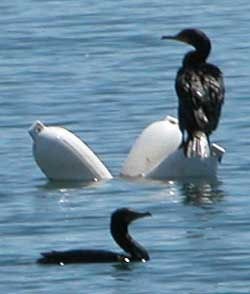
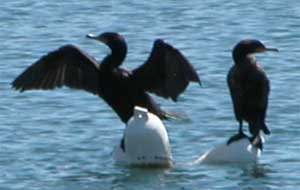
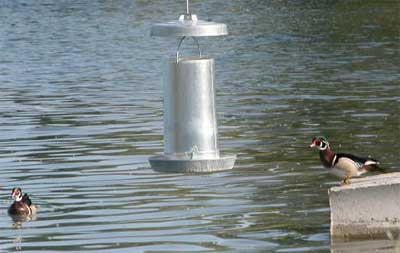
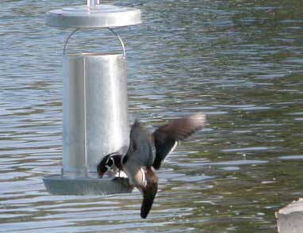
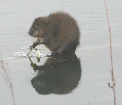
Muskrat
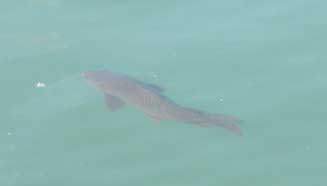
Osprey food.
Barney's Island
Betty's Island-1
Betty's Island-2
Betty's Island-3
Betty's Island-4
Betty's Island-5
Betty's Island-6
Pebbles Island
Aerial photos
Neighbors
History
Swans
Trees
Trees-2
Trees-3
Lake
Links